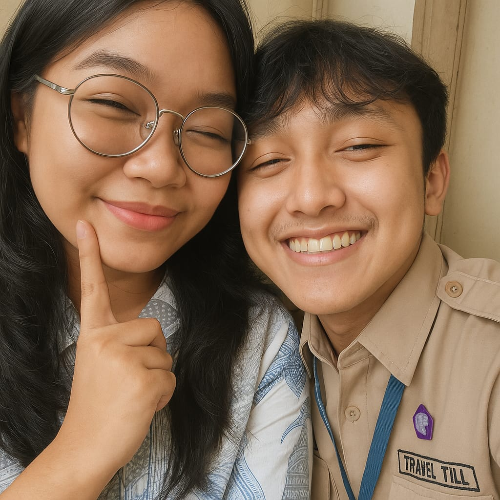
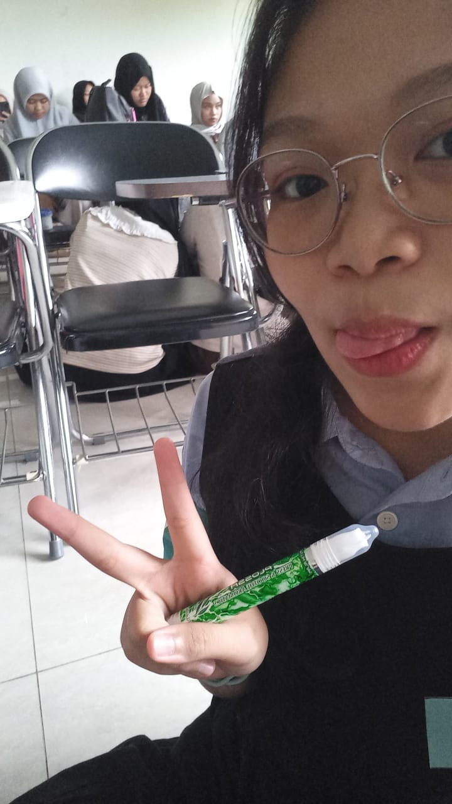
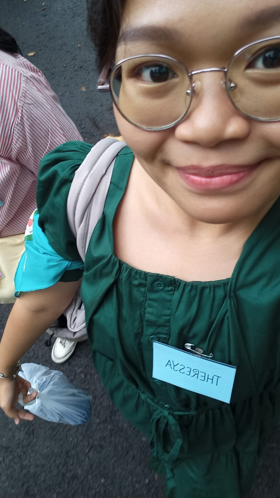
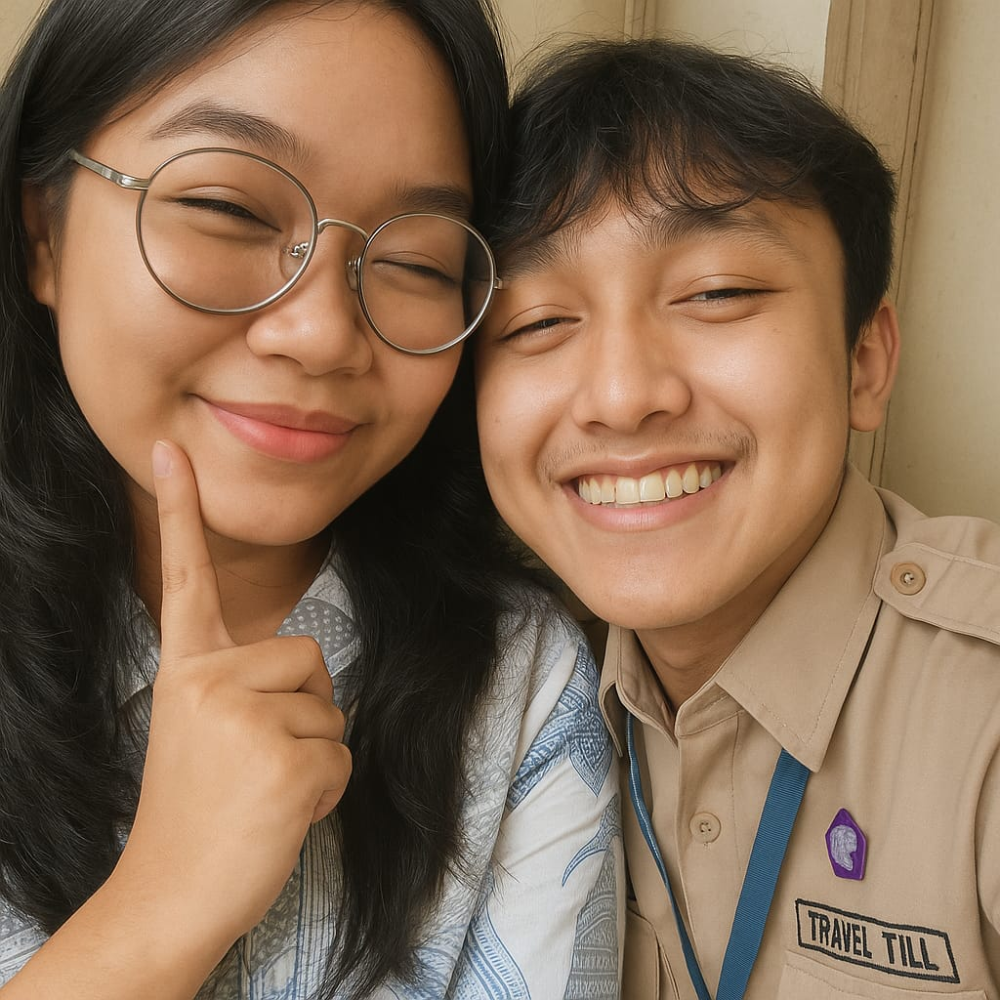
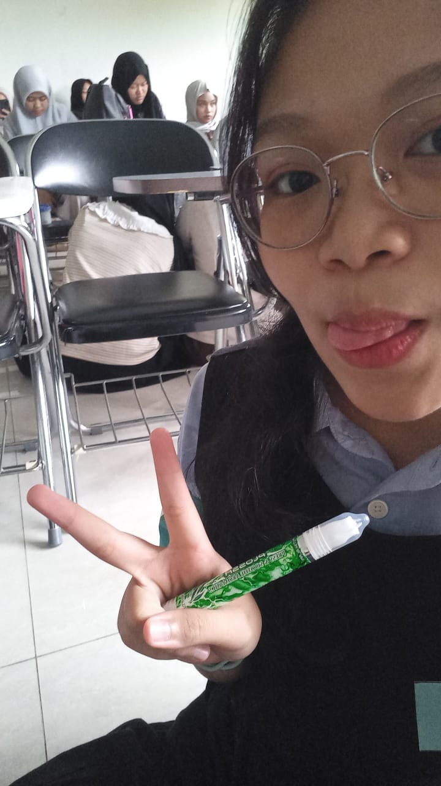
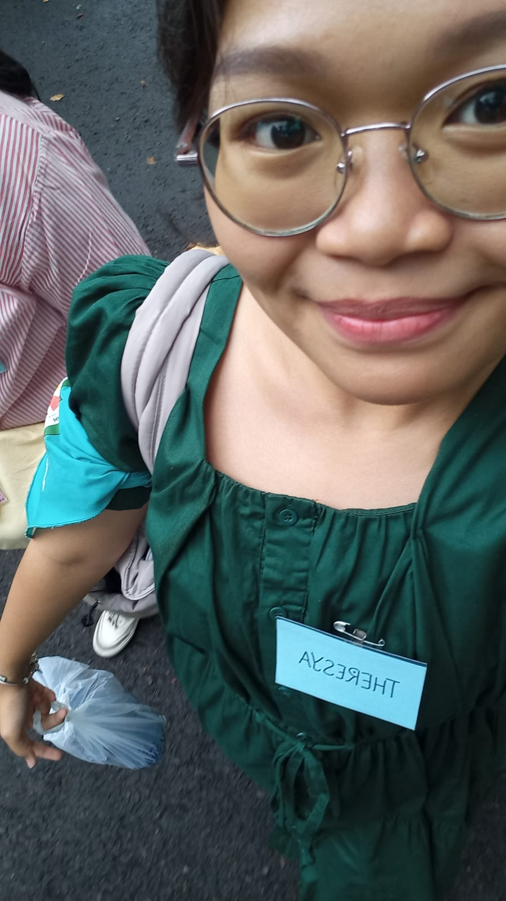

Aku nggak jatuh cinta karena kata-kata manis atau momen dramatis.
Aku jatuh cinta karena caramu bikin dunia yang berantakan terasa tenang.
Karena kamu nggak pernah pura-pura menjadi orang lain.
Karena kamu hadir ketika banyak orang cuma bilang peduli.
Kamu bukan yang sempurna, dan aku juga jauh dari sempurna.
Tapi aku nggak butuh kesempurnaan—aku cuma butuh kamu tetap jadi kamu,
dan izinkan aku terus belajar mencintaimu setiap hari.
 




